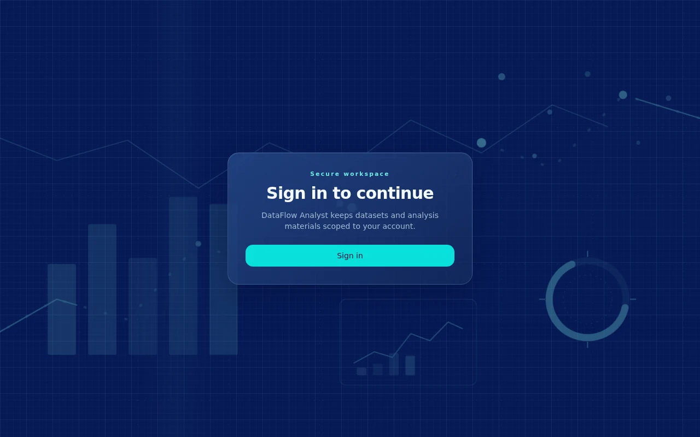
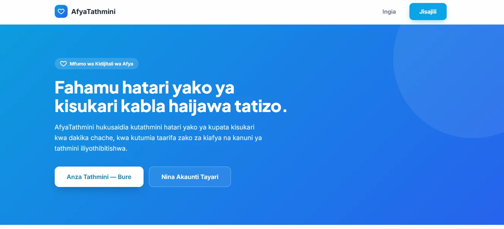
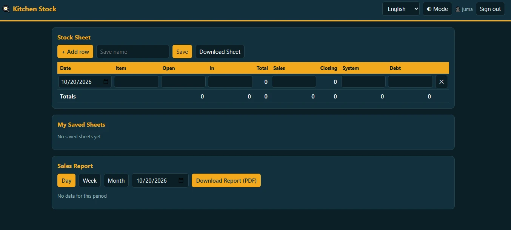
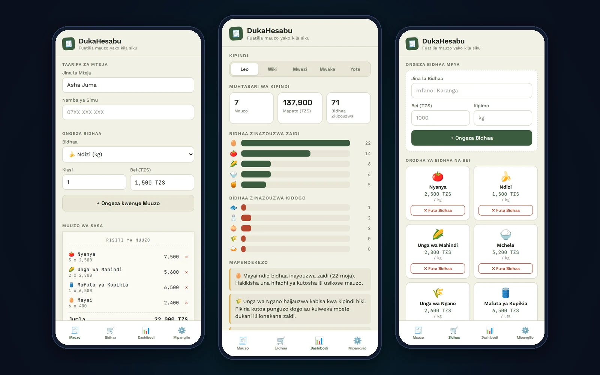

2023 – 2026
Bachelor Degree in Data Science
Eastern Africa Statistical Training Centre (EASTC), Tanzania
Turning Raw Data into Actionable Insights
A dedicated Data Analyst with expertise in statistical analysis, business intelligence, and data-driven decision making. Leveraging powerful analytics tools and programming languages to uncover patterns, trends, and opportunities hidden within complex datasets.
I am Stanslaus Mrope, a passionate and detail-oriented Data Analyst based in Tanzania. My work sits at the intersection of statistics, technology, and strategic thinking — with one goal: transforming complex, unstructured data into clear, evidence-based stories that drive smarter decisions.
My analytics journey spans across multiple domains including customer behavior analytics, education performance analysis, healthcare data quality, financial trend analysis, and agricultural data modeling. I believe that data, when properly collected, cleaned, and analyzed, holds the power to transform institutions and communities.
In everything I do, I combine rigorous statistical methodology with practical business understanding. Whether that means running regression models in SPSS and Stata, building interactive dashboards in Power BI, writing analytical scripts in Python and R, or presenting findings clearly through Excel — I bring precision and clarity to every stage of the analytics pipeline.
I am especially passionate about using data analytics to address real challenges in the Tanzanian and East African context — from improving government reporting systems to detecting fraud, monitoring educational outcomes, and supporting data-driven policy decisions at scale.
Data analytics is not just about numbers — it is about asking the right questions, finding the right patterns, and communicating insights in ways that non-technical stakeholders can act upon.
I follow a rigorous, reproducible approach: define the problem, gather quality data, perform thorough EDA, apply appropriate statistical methods, validate results, and deliver actionable recommendations.
My core focus is on descriptive, diagnostic, predictive, and prescriptive analytics — covering the full data analytics spectrum. From understanding what happened, to why it happened, to what will happen next, and what action should be taken.
Proficient in industry-standard statistical software and BI platforms for advanced data analysis, regression modeling, survey data processing, and interactive dashboard creation.
Advanced Excel skills covering pivot tables, VLOOKUP, dynamic charts, conditional formatting, and data validation. Strong report-writing skills in Word for presenting analytical findings to both technical and non-technical audiences.
Python analytics stack: pandas, NumPy, matplotlib, seaborn, scikit-learn. R expertise includes tidyverse, ggplot2, dplyr, and statistical modeling packages. Both languages used for data wrangling, EDA, modeling, and automated reporting.
Analyzed customer behavior data to identify key drivers of churn for a telecommunications company. Applied logistic regression, decision trees, and survival analysis to predict which customers were at risk of leaving. Delivered a Power BI dashboard with real-time churn probability scores, enabling targeted retention strategies that reduced churn by 18%.
Developed a predictive analytics model to identify at-risk students in secondary schools across Tanzania. Using academic records, attendance patterns, and socioeconomic indicators, built classification models in R and SPSS to flag students needing early intervention. Results were visualized in interactive Excel dashboards for school administrators.
Built a comprehensive sales analytics solution for a retail business, consolidating data from multiple outlets into a unified Power BI dashboard. Analysis covered revenue trends, product performance, regional comparisons, and seasonal patterns. Used Python for data cleaning and Stata for time-series forecasting of future sales volumes.
Conducted a thorough data quality assessment of patient records across public health facilities in Tanzania. Using SPSS and Python, identified patterns of missing data, duplicate entries, inconsistencies, and outliers. Developed a standardized data quality scorecard and reporting template in Word and Excel to guide ongoing data collection improvements.
Analyzed multi-season crop yield data from smallholder farmers in rural Tanzania to determine the impact of fertilizer use, rainfall, soil type, and farming practices on productivity. Applied multiple linear regression in Stata and R, and visualized findings using ggplot2 and Power BI maps. Insights were used to inform agricultural extension program design.
Collected and analyzed social media data to measure public sentiment toward a government public health campaign. Used Python (NLTK, TextBlob) for text preprocessing and sentiment scoring. Produced trend analysis and word frequency visualizations to track how public perception shifted over time across different demographics and geographic regions.
Performed a detailed analytics audit of departmental expenditure data for a public institution, identifying budget overruns, irregular spending patterns, and under-utilized allocations. Developed automated Excel reporting models with dynamic charts, and built a Power BI dashboard for finance managers to monitor budget utilization in real time across all cost centers.

Web platform that guides a user through the full analytics workflow in one place: secure CSV/Excel upload, dataset overview (rows, columns, types, missing values), guided data cleaning (missing values, duplicates, type fixes), feature selection, exploratory data analysis, and interactive charts with export. Cleaned data can be downloaded as CSV or Excel, and every dataset, chart and analysis snapshot is saved in a personal materials archive. It also includes a “Ask your data” Q&A feature, an in-app help assistant, English/Kiswahili support, and Light/Dark modes.

Kiswahili digital health system, built as the Group 17 capstone under Dr. Bernada Sianga, that helps people understand their risk of diabetes in a few minutes. Users register and sign in, complete a short health assessment (age, BMI, glucose, blood pressure, cholesterol and lifestyle factors) and receive a Low, Medium or High risk level with the main contributing factors and health recommendations. It keeps each user’s assessment history, produces downloadable reports, and lets a patient request a doctor consultation with their latest results attached.

Web app for food and beverage sellers to record daily kitchen stock and track sales. Each user signs in to a personal stock sheet with date, item, open, in, total (calculated automatically), sales, closing, system and debt columns, plus a totals row. Sheets can be saved under a name, reopened from “My Saved Sheets” and downloaded. A Sales Report shows results by day, week or month and downloads as a PDF. Includes language switching and Light/Dark mode.

Mobile-friendly web app that helps small shop owners track daily sales. Each sale records the customer’s name and phone, the products and quantities, and builds a receipt with the total in TZS. Comes with 17 ready-made everyday products (prices can be changed, products added or removed) and a dashboard for Today, Week, Month, Year or All time showing sales, revenue, items sold, the top and lowest-selling products, simple stocking recommendations and a full sales history. Reports can be sent by email or downloaded as CSV. Works in Kiswahili and English with Light/Dark mode, and runs entirely in the browser with no server.
Exploratory analysis of a dataset of 395 secondary-school students, answering more than 250 analytical questions. Covered demographics (age, gender, school, urban vs rural address), study time, absences, travel time, family support and romantic relationships, and how each relates to the final grade (G3). Used grouped statistics, correlations and seaborn visualizations to compare student groups.
Analyzed a bank marketing dataset through 40 business questions to understand which customers make a term deposit. Examined age, job, marital status, education, balance, housing and personal loans, default history, contact method, call duration, month of contact and previous campaign outcomes. Findings included that call duration and previous contacts strongly influence deposit success, and that cellular contact had the highest success rate.
Analyzed an employee dataset to understand what drives annual salary. Explored salary against age, department, gender, country, city, job title and ethnicity, and cleaned the data by renaming fields and removing unused date columns. Found that salary rises with age, Marketing had the highest average departmental salary, and women were the larger group of employees while men had a higher average salary.
Second employee analytics study focused on how the workforce is structured and paid. Compared headcount and average salary by business unit, bonus levels by department, the relationship between gender and average annual salary, job titles by country, and ethnic group pay patterns, using grouped summaries and charts to support clear comparisons.
Country-level analysis of adult mortality rates by sex, continent and level of development. Showed that average male mortality (about 202) was higher than female (about 131), that Africa had the highest mortality among the continents, and that countries at a low development level had higher mortality rates. Also compared countries by population size and ranked countries within Africa.
Analyzed bike rental data to understand demand patterns. Looked at the seasons in the data, which year and season had the most rentals, average rentals per day, the share of casual versus registered users, and how temperature relates to rentals within each season, with charts to show seasonal usage.
Cleaned and analyzed a patient dataset with age, sex, weight, height, BMI, blood pressure and blood glucose readings. Checked each column for data types and missing values, filled the gaps, and confirmed the dataset had no remaining nulls. Then analyzed BMI categories, age differences by sex, and how weight relates to blood pressure and age.
Sales analysis that counts how often each product appears, calculates the average sale amount (about 171), and ranks the top products by total sales. Product C appeared most often and had the highest total sales, while Product E appeared least. Results were shown with summary tables and bar charts.
Analysis of national examination results in Kiswahili and English. Cleaned the data (including filling missing values with scikit-learn’s SimpleImputer) and compared performance by gender, region, school, school ownership and subject combination. Government schools produced the most passing students, and the PCM combination had the most successful students.
Analysis of examination results for a class of 53 students (24 male, 29 female). Summarized results by division: 13 in Division I, 26 in Division II and 13 in Division III, with no Division IV and one absent student. Compared male and female performance by division and analyzed performance across subjects, using pandas summaries and visualizations.
I am open to analytics projects, research collaborations, consultancy work, and full-time opportunities. If you have data challenges that need expert analysis, or you would like to discuss a potential engagement, please do not hesitate to reach out.
Whether you need a custom analytics dashboard, a statistical report, a predictive model, or simply a consultation on your data strategy — I am ready to help turn your data into decisions.